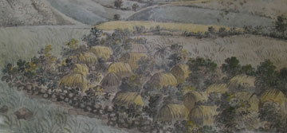
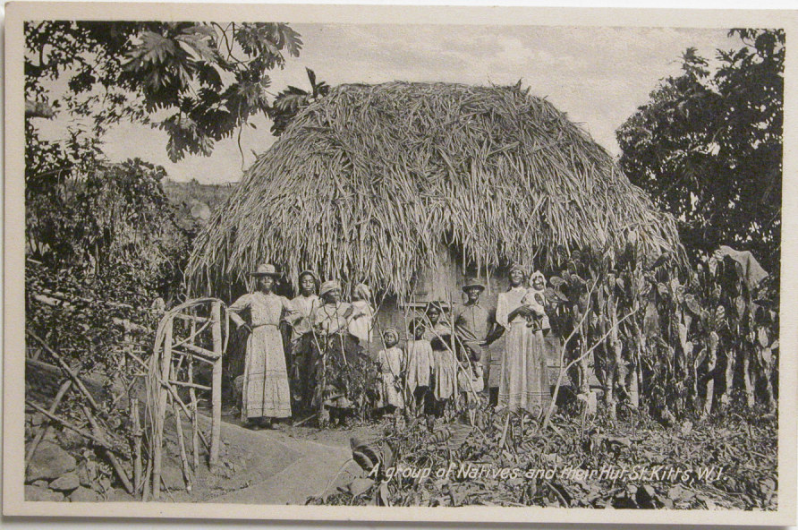
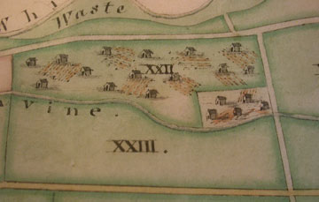
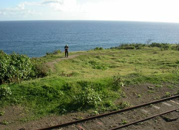

01 지도는 무엇을 기록했는가
1795년 Lieutenant James Lees, and 100 years later

1795년 · Lieutenant James Lees 의 그림
Slave houses in Nevis were described as 'composed of posts in the ground, thatched around the sides and upon the roof, with boarded partitions'. They were little more than huts, with a single storey and thatched with cane trash. In the inventory of property lost in the French raid on St Kitts in February 1706 they were generally valued at as little as £2 each.

1990년초 사진 — 100년 뒤에도, 같은 형태의 집

Waste쓸모 없는 땅 (경작지가 아니라는 것)Ravine낭떠러지
"...shows a slave village on a strip of land between a road on one side and a steep ravine on the other." · "...eighteen small huts... some with ridged garden plots beside them."
즉, 노예 마을이 한쪽은 도로, 다른 한쪽은 가파른 낭떠러지(Ravine) 사이에 낀 좁은 땅 위에 있고, 그 옆에는 고랑이 파진 텃밭이 딸려 있다.

현재 — 도로와 낭떠러지 사이, 그 좁은 땅
liverpoolmuseums.org.uk/slave-houses-st-kitts-and-nevis · liverpoolmuseums.org.uk/slave-villages-st-kitts